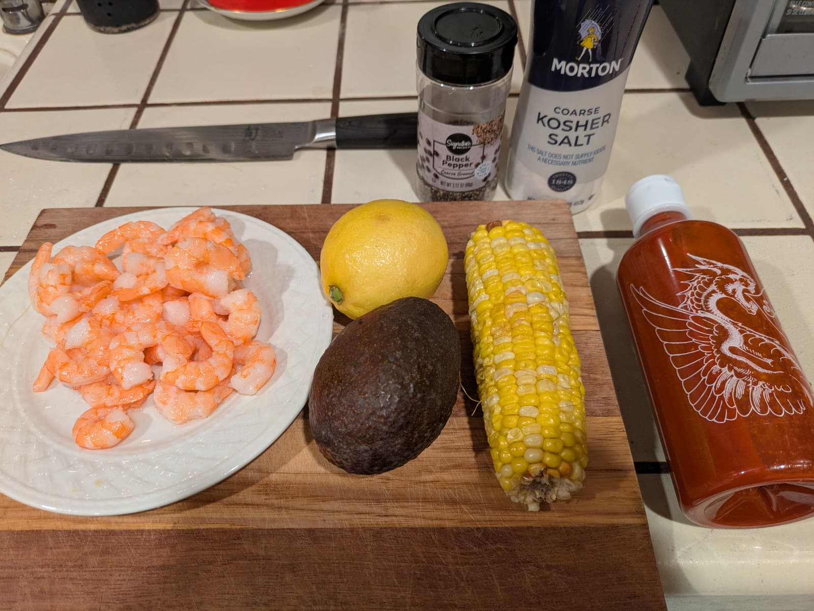

Shrimp Avocado Salad


I forgot the greek yogurt. I’ll add it next time.
Summary
Prep time: 5 mins | Cook time: 0 mins | Total time: 5 mins | Servings: 4
Ingredients:
- 12 oz cooked shrimp
- 2 large ripe avocados, cubed
- 1 cup corn
- 2 tbsp greek yogurt
- 2 tbsp fresh lime juice
- 1 tbsp sriracha
- Salt and pepper to taste
Instructions:
- Cut avocados in half and remove pit. Scoop flesh into a bowl and cube.
- Add shrimp, corn, greek yogurt, lime juice, sriracha, salt, and pepper.
- Toss until well combined and serve.
Source: Everyday Maven